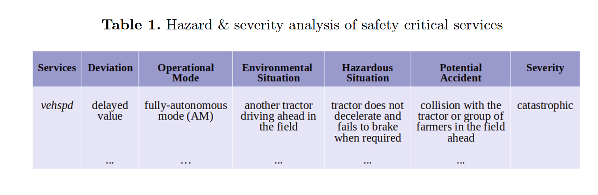
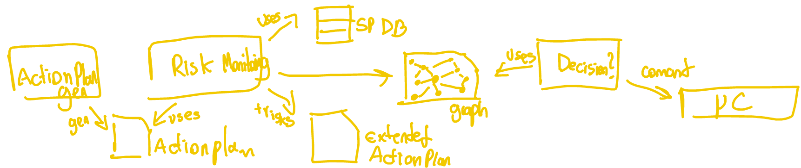

2025-03 Research Dump
phd
research-dump
Problem statement
- I started researching the topic of runtime safety management of Machine Learning (ML) components as a PhD candidate at the RPTU.
- They are often a black box with low understandability. This leads to variable uncertainty during the runtime.
- Current Risk-Assessment processes relies on worst-case operational assumptions made on the design phase
- Therefore we need a way to make the shift of certain aspects of Safety-Assurance to runtime. See Risk-Assessment-at-Runtime
Currently doing
- Reading the previous work from the commonly cited researchers in the field
- Reviewing relevant terminology, standards and concepts
- Mapping conferences, workshops, journals
- 2025-03-The-Roles-of-Uncertainty-Risk-and-Hazard-in-Dynamic-Assessment
- Essay-based-Learning
- 2025-03-Safety-Assurance-of-RMS
Reading list
Haupt and Liggesmeyer, 2019
Paper: @Haupt2019166
- Autonomous-Systems operating in an unknown, dynamic and unstructured safety-critical environment requires different techniques for Safety-Assurance.
- The paper’s contribution is a rule-based runtime safety monitoring component that observes system’s deviations
- In the design phase the system is decomposed in its services – borrowing from SOA – is able to perform. For each combination of service deviation and context (operational mode, like fully autonomous, and environmental info during operation) a HARA is performed. See Table 1 below.
- A risk monitoring service outputs a result akin to ASIL but for the target domain.
- They evaluated in a Tractor-Implement-Automation scenario, which is a Reconfiguration scenario where the configuration of the agricultural implement can be changed by the vehicle itself – autonomously. This is really cool. Similar to I4.0.

Patel and Liggesmeyer, 2021
Paper: @patelMachineLearningBased2021
- He is using Support Vector Machine to implement Dynamic-Risk-Assessment at runtime for the Autonomous-Vehicles domain. “DRA-SVM”
- SVM is a Supervised-Learning technique, therefore he needed to manually select the features to be monitored
- His model gets as input the vehicle status data (acceleration, braking) and outputs Severity and Controllability rating
- It was validated using an Adaptive-Cruise-Control CARLA simulation. Both training and test data also come from the simulation. So theoretical applicability only.
- He mentions as future work the possible addition of a decision-making component that gets the outputs from his model and makes the decision of, I guess, reducing speed or braking.
Hartsell et al., 2021
Paper: @hartsellReSonAteRuntimeRisk2021
- RESONATE uses probabilistic models and conditional relationships derived from the BTD formalism to dynamically assess the risk in a situation – not quite rule-based.
- It takes information from monitoring systems — which can be ML components — and sensor information
- It relies on an extended BTD with probability information – output from the design phase
- The component in the current form only outputs likelihood and not severity
- Uncertainty is also not an output of RESONATE
Reich and Trapp, 2020
Paper: @reichSINADRAFrameworkAssurable2020
- SINADRA is a framework encompassing risk analysis in both the design phase and runtime
- Design phase includes synthesis of the runtime model
- Main contribution is to get Residual-Risk at the runtime; claims previous work didn’t do that
- Runtime model is a Bayesian-Network (BN) — therefore, model based — which get the intended EGO behaviour as input and outputs Residual-Risk + Uncertainty. This data can then be consumed by a decision making component – and then redirected to a Proactive-Risk-Control component e.g.
- No evaluation is given
- Explicit handling of uncertainty—from perception through to risk assessment
- Similar to Patel, but Patel outputs Severity + Likelihood, if I’m not mistaken
- Safety assurance is a key challenge; paper outlines the need to integrate the synthesis of the BN models into a systematic safety engineering process
Kläes et al., 2021
Paper: @klaesHandlingUncertaintiesDataDriven2021
- They are applying Uncertainty-Wrappers – additional models that enrich a DDM with Uncertainty information – in a DRM framework
- They implemented an RSS validation scenario, in which the friction is considered to be dynamic and a source of uncertainty for estimating the Safe Distance.
Ertle et al., 2012
Paper: @ertleUtilizingDynamicHazard2012
- They use a database of Safety-Principles – specific known hazard causes – to assess risks.
- They mentioned the example of a plastic spoon approaching a burning candle. Toxic vapors evolve and the or the spoon starts to burn.
- Therefore, one can conclude that heated plastic material can – they use always here, but I’m not so sure – generate toxic vapor or starts to burn.
- The use case is an autonomous robot driving in a production plant. Every second (1Hz) they perform the process of (1) gathering environment data, (2) building the action plan – the set of the possible movement outcomes, (3) performing the Risk-Assessment with the method described in 1 and (4) executing the plan. (See Fig 1 for a really badly-drawn schematic)

Leite et al.
Papers: @leiteSafetyAssuranceAutonomous2017, @leite2018dynamic, @leite2019dynamic
- the paper extends the previous work @leiteSafetyAssuranceAutonomous2017 by implementing a runtime risk assessment approach for autonomous and cooperative MCPS
- Configurations are certified at design-time and attributed a SIL to dynamic decision-making.
- For their use case – Patient-Controlled-Analgesia – smart alarm and automated interventions can be realized. The challenge is the insufficient context awareness and a lack of reasoning capabilities to deduce the current risk.
- each configuration, pre-certified with a ConSert Tree Tree, is monitored in real time
- Combined with ConSerts, it’s possible to continuously check the matching between current top-level Safety-Guarantees of the MCPS – Which can be subjected to Reconfiguration – and the current top-level safety requirement on the other.
- That means, (1) we can go from the selected configuration – which is specified during design time – and (2) analyze if the Safety-Guarantees are sufficient – which can be provided by ConSerts.
- I wonder what is the corresponding term of Safety Guarantee from ISO 26262?
- A Bayesian-Network is used to calculate a configuration-dependent risk metric based on sensor data and expert-defined parameters
Laxman et al.
Papers: @laxman2020u-map
- Proposes a reference map – U-map – for handling uncertainties.
- It maps uncertainties with Hazards – which then can be mapped to Safety-Measures
- Development of the U-map happens in the design phase.
- A probabilistic model Bayesian-Network was used for runtime update
- It mentions the possibility of the map being used as knowledge base for frameworks like MAPE-K feedback loops with the goal of analyzing the uncertainty and executing identified mitigation steps.
- The use case presented was a production scenario where e.g. a mobile robot can be a hazard for a human.
Schneider et al.
Papers: @schneiderDynamicRiskManagement2024
Papers: @schneider2010conditional, @schneiderApproachingRuntimeTrust2011
- Conditional Safety Certificates (ConSerts) are introduced to facilitate Dynamic-Risk-Assessment.
- ConSerts map safety property types of required and provided services
- Specified in boolean logic similarly to CFTs – with gates and direct edges.
- Allows associating runtime evidence to safety guarantees, which are associated with a SIL
- I feel I need a more concrete example to better understand this concept
- Contributes to ideas of utilizing ConSerts to Support Trust
- Why Conserts don’t support trust by default and must be extended?
- Because they don’t support trust certificates – considering security and the full spectrum of dependability – target for them is mostly safety, whereas dependability also involve availability and reliability.
On doing things better
- 2025-03-Reading-Papers-Efficiently
- Doing-Literature-Review
- Systematic-Literature-Review
On beginning the PhD with a survey
- It doesn’t matter if I end up doing a SLR or not; I have to start reading systematically. That means, finding the gist of the paper and seeing the context, the assumptions, the pros and cons. See the paper in the big picture.
- I should start cataloguing what I’m reading.
- Create a new note with a set of questions that must be answered for every paper being analyzed in the context of my research.
Dependability issue: global and project-specific notes
- It’s often the case for a given reference – a paper for instance – I analyze it in its own note in my main vault but need to refine or enrich it with additional information.
- This additional information is often project-specific and undesirable in a more generic context – which is the case of my main vault.
- How can I add new notes to a project that reference the global note? So I don’t repeat myself and still maintain consistency during an analysis?
- I think the concept of parent note might be handy. This parent note can be linked in the metadata of the child note as:
parent: example-parent-note– here assuming a wikilink format. - Just for the context I plan to apply this for the following workflow:
- I create a new global note for a reference – let us assume a conference paper. There we add all relevant metadata of the publication and my general remarks and notes about it (often answers for what/why/how/weaknesses/future work)
- In a separated vault/repository – where I am performing a literature review – I create a new note which references the global note through the parent property, as described in 4.
- In this new note I add the survey-relevant (or more abstractly, project-specific) information.
Thoughts on executing a SLR
- Instead of blindly digesting all papers, one by one, I could apply a smarter approach:
- Sort by last author – this is normally the head researcher. That way I sort by the research group. Then apply a sort by first author. Digest together all papers of the research group grouped by first author.
- This makes understanding the evolution of the thought-process inside a research grouper easier. Furthermore, it’s easier for me to digest and process ideas that are correlated and/or are built on top of the previously defined concepts.
Concepts
- Hazard, Risk, Safety-Engineering, Functional-Safety
- Safety-Engineering vs Security
- HARA, Risk-Assessment
- Dynamic-Risk-Assessment == Risk-Assessment-at-Runtime ? find out
- DRM vs Dynamic-Risk-Assessment
- Machine-Learning-Models, Data-driven-Model
- SIL, ASIL
- DDI, ConSert, U-map
Standards
- IEC-61508: More abstract functional safety for EE
- ISO-26262: Functional safety for Road Vehicles
- IEC-31010: Risk assessment techniques
- DIN-SPEC-92005: Uncertainty quantification in ML